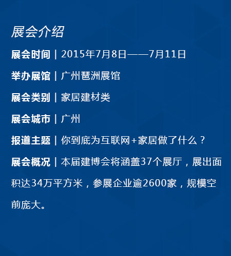

在互联网+的大背景下，家居行业也刮起“互联网+家居”之风，为顺应历史给予企业发展的大好机遇，响应政府号召，腾讯网亚太家居报道团队也将顶着烈日，前往展馆进行最新的资讯报道，看看家居企业们到底都为互联网+家居做了什么？[详细]
7月8日-11日，第17届广州建博会将在中国进出口商品交易会展馆隆重举行。相比历年建博会，本届建博会规模空前庞大，从展出面积到参展人数都有质的飞跃，在“互联网+”狂风席卷之时，广州建博会定制与智能并驾齐驱。[详细]
2015年6月2日在上海国家会展中心盛大开幕。由“一年一届相约广州”到升级到“一年两届，上海、广州两地展览”的新格局，也预示着定制家居拓展市场的北移。然而在上海建博会之后举办的广州建博会将会是一番怎样的景象呢，让我们拭目以待。[详细]
大自然家居董事长佘学彬
环保，健康，智能是未来发展方向，今年主推智能。互联网+家居还要细分为互联网+产品和服务，从消费者角度出发研究智能产品。
箭牌橱柜事业部总经理钟开荣
钟总在回答“我们到底为互联网+家居做了什么？”时，表示，在互联网时代背景下，互联网是一个工具，在做好产品的同时，充分利用好互联网这一工具，能实现更好的发展。
箭牌橱柜市场部经理方发明
他表示，箭牌注重O2O模式，线上与天猫，京东等平台合作，拓宽线上的销售渠道，在线下，同时注重客户线下的体验，实现线上线下更好的联动。
顶固品牌管理中心总监邹文胜
在互联网的新的经济模式下，用户的需求发生变化，作为传统家居产业，互联网+这一概念对企业来讲将有利于实现客户在线上对产品的了解，最终完成产品的实物体验和产品的最终环节。
联邦高登副总经理林福来
林总认为，互联网+家居最重要的是打造一个互动沟通平台，而联邦高登本月也即将推出体验馆及网上平台，与消费者进行互动，了解他们的诉求。
皮阿诺李学博
李总监表示，面对互联网这股潮流，我们不能闭门造车，也不能盲目跟风。在拥抱互联网的同时，注重回归产品方可赢得消费者青睐。
九牧厨卫副总裁张彬
为我们介绍了其对未来智能家居与互联网+的理解，上市一年多的阳台衣架品牌已经申请了20多项专利。
新标家居董事长黄东江
通过互联网+，利用电商平台，拉进了与消费者的距离。让更多的消费者认识到新标这个品牌。